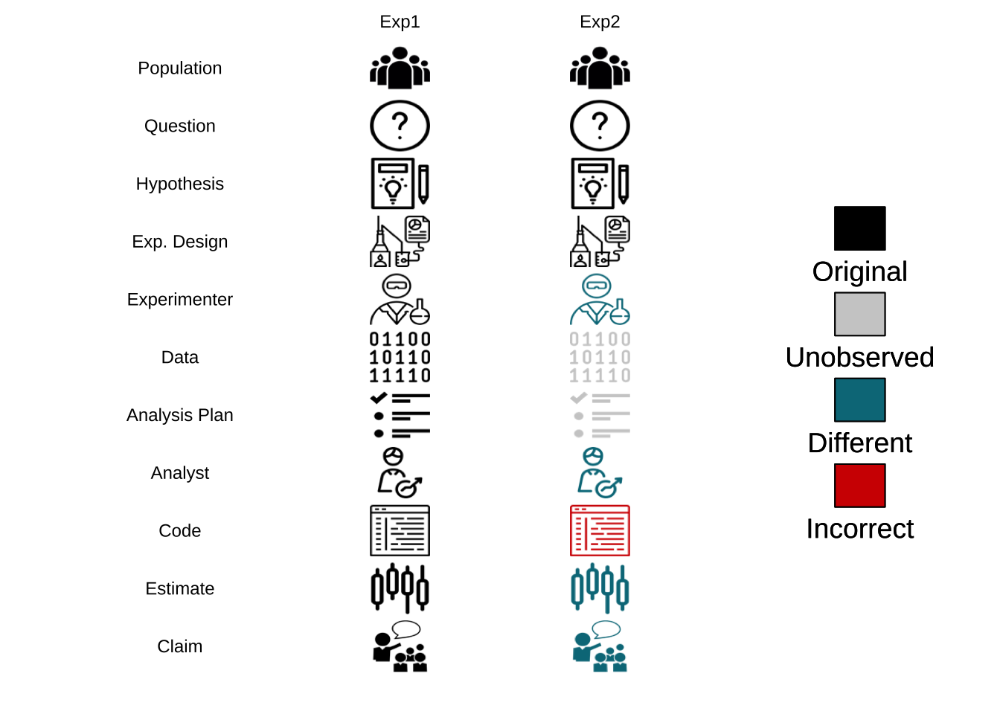

坑 6 数据处理
数据处理是科研中很重要的一环，同样的数据不同的人处理会得到不同的结论。事实只有一个，但解释可以有很多，数据处理方式本身就会对解释产生影响。这里重点讨论几个常见的数据处理问题。
6.1 多重比较
方差分析解决的是分类变量对响应变量的影响问题，通常是用分类变量所解释的变异比上分类变量以外的变异去进行F检验。换句话讲，如果分类变量可以解释大部分响应变量的变异，我们就说这种分类变量对响应变量的解释有意义。例如下面这组数据：
1, 1, 1, 1, 1, 2, 2, 2, 2, 2, 3, 3, 3, 3, 3
总变异为10, 如果我们分组为按照相同的数放到一起，那么组内变异就是0，组间变异为10，这时我们就说这种分组有效的解释了响应变量，F值趋向正无穷。如果我们完全随机分组，组内与组间的变异差不多，那么这种分类方法并不解释响应变量，反映到F值上就是1。
但是仅仅知道是否受影响是不够的，如同上面的例子，我们知道的仅仅是存在一种分类方法可以解释响应的全部变化，其内部也是均匀的，但不同分类水平间的差异我们并不知道，这就是多重比较的起源。实际生活中如果差异很明显往往统计学工具不用出场，所以你应该预想到多重比较或仅仅是均值比较适用的场景往往差异我们不能直观感受，需要统计学工具来帮忙。
同时要注意，如果我们对两组数据做置信度0.05的t检验，我们遇到假阳性的概率为5%。但如果面对多组数据例如3组，进行两两比较的话就有\[choose(3,2)\]也就是3组对比，那么我们遇到假阳性的概率就为\[1-(1-0.05)^3\]，也就是14.3%，远高于0.05的置信度。组越多，两两对比就越多，整体上假阳性的概率就越来越大，到最后就是两组数据去对比，无论如何你都会检验出差异。
那么多重比较如何应对这个问题呢？有两种思路，一种思路是我依旧采取两两对比，进行t检验，但p值的选取方法要修改，例如Bonferroni方法中就把p的阈值调整为进行多重比较的次数乘以计算得到的p值。如果我们关心的因素为2，那么计算得到的p值都要乘2来跟0.05或0.01的边界置信度进行比较；另一种思路则是修改两两比较所用的统计量，给出一个更保守的分布，那么得到p值就会更大。不论怎样，我们这样做都是为了降低假阳性，但同时功效不可避免的降低了。
我们设计一个实验考察一个因素对响应变量的影响，结论无过于有影响，没影响。多重比较的前提是有影响，给出的答案是对影响的估计：影响有多大。那我们重复这个实验所要考虑的问题就是能否重现影响，影响的方向与大小是否与文献报道一致。
就方向而样，虽然我们都不承认0假设（要不然还做什么实验），但当我们默认设定为双尾检验时，假阳性就被默认发生在两个方向上了，这样的多重比较必然导致在其中一个方向上的错误率被夸大了。
就影响大小而言，如果我们每次重复都选择效应最强的那一组，重复越多，预设的偏态就越重，换言之，我们的零假设因为重复实验的选择偏好而发生了改变。
这是多重比较里常见的错误类型：
- type I 假阳性
- per-comparison error rate (PCER) 进行多次对比得到的假阳性的概率
- familywise error rate (FWER) 将多组比较看作一个大组，这时造成的错误率
- false discovery rate (FDR) 控制假阳性与总拒绝率的比例
- 一般而言 PCER ≤ FDR ≤ FWER FWER更容易不拒绝空假设，更保守
- type II 假阴性
- type III 有差异 方向错误
多重比较的方法类型
- Single-step procedures 单步法 只考虑对H0的影响，不考虑其他影响
- Stepwise procedures 逐步法 考虑其他假设检验对单一检验的影响
- Step-down procedures 排序后先对比第一个，有差异对比下一个，当出现无差异时停止对比
- Step-up procedures 排序后对比，有差异时停止对比，之后均认为有差异
- 两两比较 不同组之间进行均值比较，最常见
- 对比 除了考虑不同组间均值比较，还考虑均值间线性组合的新均值的差异性，F检验有时是因为对比而不是两两比较产生的显著性
6.1.1 单步法等方差
Tukey’s HSD(两两比较)
- 基于t范围分布
- 等方差同数目，如果数目不同则使用Tukey-Kranmer方法
- 两两比较最佳，数目相同功效弱于下降法
Bonferroni(两两比较)
- 切割α，如果进行了c次推断，整个错误率为cα
- 通用方法，应用在任一个推断
- 方法简单，但十分保守
- 只对比部分的话可自定义c值
- 适用于指定对比数情况，此时功效高于Tukey
DST(两两比较)
- 对Boneferroni方法的改进，功效更高
GT2 test(两两比较)
- 功效高于Dunn-Sidak方法
Gabriel(两两比较)
- 分组数目相同等同于GT2，不同时功效高，但不保证α
- 易于可视化
Scheffe test(两两比较)
- 两两比较中功效最弱
Tukey’s HSD(对比)
- 涉及2～3个均值时功效最高
Bonferroni(对比)
- 指定对比数
DST(对比)
- 指定对比数，功效高于Bonferroni
Scheffe test(对比)
- 保证α，两两比较功效最高
6.1.2 单步法异方差(对比与两两比较)
GH procedure
- 不保证整体错误率，有时会超过，保守但功效高
C
- 保证整体错误率
T3
- 保证整体错误率
Brown-Forsythe-Scheffe
- 功效最高
6.1.3 单步法空白对比
Dunnett
- 用于对比controls的变化
- 其他组对比不考虑
Hsu’s MCB
- 对比均值与其他最好（自定义，可最大，亦可最小）
- 目的寻找比其他好的而不是不同的
- 对比次数最少，功效强，但低于Dunnett
6.1.4 Stepdown procedures
- 基于Tukey法
- 先比较最大最小，q值取分组数
- 比较最大第二小，q取分组数-1
- 继续直到出现无差异停止
- 当不需要置信区间且样本数相同时使用
- 不推荐SNK与Duncan，推荐REGWF或REGWQ方法
SNK
- 不保证α
Duncan
- 不保证α
Ryan-Einot-Gabriel-Welsch-Fisher(REGWF)
- F检验加强版，保证α
Ryan-Einot-Gabriel-Welsch-Q(REGWQ)
- q值法加强版，保证α
6.1.5 step-up procedures
- Welsch
- Hochberg
- Dunnett and Tamhane
6.1.6 多重比较简略选择指南
总体控制错误率
- 两两比较用Tukey法
- 对比用Scheffe test
- 指定对比数考虑 Gabriel > GT2 > DST > Bonferroni
- 跟control比较用Dunnett
- 方差不相等用GH，C，T3等方法
错误率
- 保证α用Tukey Scheffe Dunnett
- 不保证用其他的
探索与确认
- 事前分析确定对比数用 Gabriel GT2或Scheffe
- 事后确定对比用Tukey或各种stepwise方法
6.1.7 参考资料
- Rafter, J.A., Abell, M.L., Braselton, J.P., 2002. Multiple comparison methods for means. Siam Review 44, 259–278.
- http://cos.name/cn/topic/142002
- 多重比较问题 https://www.nature.com/articles/nbt1209-1135
- Bretz, F., Hothorn, T., Westfall, P., 2010. Multiple Comparisons Using R. CRC Press. Gabriel, K.R., 1978. A Simple Method of Multiple Comparisons of Means. J. Am. Stat. Assoc. 73, 724. https://doi.org/10.2307/2286265
- Gelman, A., Hill, J., Yajima, M., 2009. Why we (usually) don’t have to worry about multiple comparisons. ArXiv09072478 Stat.
- Plotting of multiple comparisons? [WWW Document], n.d. URL http://stackoverflow.com/questions/2286085/plotting-of-multiple-comparisons (accessed 11.9.13).
- Rafter, J.A., Abell, M.L., Braselton, J.P., 2002. Multiple comparison methods for means. Siam Rev. 44, 259–278. Stoline, M.R., Ury, H.K., 1979. Tables of the Studentized Maximum Modulus Distribution and an Application to Multiple Comparisons among Means. Technometrics 21, 87. https://doi.org/10.2307/1268584
- 多重比较谬误
6.2 多重检验
各种组学分析技术的进展导致了我们在收集数据时更侧重数据信息的保存，然而我们收集的数据最终也会根据我们的想探索的问题来寻找答案，甚至有时候我们在实验设计分组时就打算考察某一个变量而为了获取更多的相关信息而采用了组学技术。这点是尤其要强调的，科研人员一定是面向科学问题解决科学问题，而不要为了应用新技术而应用新技术。当然，现实的情况是新技术特别是组学技术的发展为我们提供了大量的可同时测定的生物学指标（例如基因表达水平、蛋白表达水平、代谢产物表达水平）数据，大到我们事先也不知道会有什么模式会出现，这样就需要数据挖掘，特别是统计学知识来帮助我们发现新知。然而，组学技术产生的这类高通量数据是具有一些特质的，数据里确实会有我们关心分组的差异表达，但同时也有大量测量值对于我们设定的分组不敏感，然而当我们去对比组间差异时就会被这些数据干扰。
举例而言，我对两组样品（暴露组跟对照组）中每一个样品测定了10000个指标，每组有10个样品，那么如果我想知道差异有多大就需要对比10000次，具体说就是10000次双样本t检验。那么如果我对t检验的置信水平设置在0.05，也就是5%假阳性，做完这10000次检验，我会期望看到500个假阳性，而这500个有显著差异的指标其实对分组不敏感也可以随机生成。假如真实测到了600个有显著差异的指标，那么如何区分其中哪些是对分组敏感？哪些又仅仅只是随机的呢？随机的会不会只有500个整呢？
这就是多重检验问题，做经典科研实验时往往会忽略，深层次的原因是经典的科研实验往往是理论或经验主导需要进行检验的假说。例如，我测定血液中白血球的数目就可以知道你是不是处于炎症中，其背后是医学知识的支撑。然而，再组学或其他高通量实验中，研究实际是数据导向的，也就是不管有用没用反正我测了一堆指标，然后就去对比差异，然后就是上面的问题了，我们可能分不清楚哪些是真的相关，哪些又是随机出现的。
当然这个问题出现也不是一天两天了，在多重比较问题上就已经被提出过，只不过在多重比较里对比数因为排列组合比较多而在多重检验里纯粹就是因为同时进行的假设检验数目多。那么其实从统计角度解决的方法也基本来源于此。
对于单次比较，当我们看到显著差异的p值脑子里想的是空假设为真时发生的概率，当我们置信水平设定在0.95（I型错误率0.05）而p值低于对应的阈值，那么我们应该拒绝空假设。但对比次数多了从概率上就会出现已经被拒绝的假设实际是错误的而你不知道是哪一个。整体错误率控制的思路就是我不管单次比较了，我只对你这所有的对比次数的总错误率进行控制。还是上面的例子，对于10000次假设检验我只能接受1个错误，整体犯错概率为0.0001，那么对于单次比较，其I型错误率也得设定在这个水平上去进行假设检验，结果整体上错误率是控制住了，但对于单次比较就显得十分严格了。下面用一个仿真实验来说明：
# 随机数的10000次比较
set.seed(42)
pvalue <- NULL
for (i in 1:10000){
a <- rnorm(10)
b <- rnorm(10)
c <- t.test(a,b)
pvalue[i] <- c$p.value
}
# 看下p值分布
hist(pvalue)
## [1] 477## [1] 0这样我们会看到进行了整体的控制之后，确实是找不到有差异的了，但假如里面本来就有有差异的呢？
set.seed(42)
pvalue <- NULL
for (i in 1:10000){
a <- rnorm(10,1)
b <- a+1
c <- t.test(a,b)
pvalue[i] <- c$p.value
}
# 看下p值分布
hist(pvalue)
## [1] 6559## [1] 45上面我们模拟了10000次有真实差异的假设检验，结果按照单次检验0.05的阈值能发现约7000有差异，而使用0.0001却只能发现不到100次有显著差异。那么问题很明显，或许控制整体错误率可以让我们远离假阳性，但假阴性也就是II型错误率就大幅提高了，最后的结果可能是什么差异也看不到。
下面我们尝试一个更实际的模拟，混合有差异跟无差异的检验：
set.seed(42)
pvalue <- NULL
for (i in 1:5000){
a <- rnorm(10,1)
b <- a+1
c <- t.test(a,b)
pvalue[i] <- c$p.value
}
for (i in 1:5000){
a <- rnorm(10,1)
b <- rnorm(10,1)
c <- t.test(a,b)
pvalue[i+5000] <- c$p.value
}
# 看下p值分布
hist(pvalue)
## [1] 3499## [1] 21此时结果就更有意思了，明明应该有5000次是有差异的，但阈值设定在0.05只能看到约3500次，而0.0001只能看到24次。
上面的模拟告诉我们，降低假阳性会提高假阴性的比率，而且似乎本来0.05的阈值对于真阳性也是偏小的。同时，面对假设检验概率低于0.05的那些差异，我们也没有很好的方法区别哪些是真的，哪些是随机的。
其实很多人都知道整体错误率控制是比较严格的，但也不是完全没人用，例如寻找生物标记物做重大疾病诊断时就不太能接受假阳性而可以接受一定的假阴性，此时如果标准放宽就会找到一大堆假信号，到时候标记不准就会对诊断产生负面影响。
下面介绍下常见的整体错误率控制方法：
Bonferroni 方法
思路很简单，就是控制显著性，例如单次检验假阳性比率\(\alpha\)控制在0.05，那么n次检验假阳性比率控制为\(\frac{\alpha}{n}\)。这样实际是对整体采用了个体控制的控制思路：
\[ P(至少一个显著)=1-P(无显著差异) = 1-(1-\alpha/n)^n \]
我们来看下\(\alpha = 0.05\)随比较数增加的效果：
n <- c(1:10 %o% 10^(1:2))
p0 <- 1-(1-0.05)^n
p <- 1-(1-0.05/n)^n
# 不进行控制
plot(p0~n,ylim = c(0,1))
# Bonferroni方法控制
points(p~n,pch=19)
其实，这样的控制得到的整体错误率是略低于0.05的，并且数目越大，整体错误率越低。这个方法十分保守，有可能什么差异你都看不到，因为都变成假阴性了。在实际应用中一般不调节p值的假阳性比率而直接调节p值，取原始p值跟整体检验数目的乘积与1的最小值作为调节p值，还可以用0.05或0.01进行判断，不过这时候控制的整体而不是单一检验了。
当然这只是最原始的Bonferroni方法，后来Holm改进了这种一步法为逐步法，此时我们需要首先对原始p值进行排序，然后每个原始p值乘上其排序作为调节p值。例如三次多重检验的p值分别是0.01、0.03与0.06，其调节后的p值为0.03，0.06，0.06。如果我们控制整体假阳性比率低于0.05，那么调解后只有第一个检验可以拒绝空假设。值得注意的是Holm的改进是全面优于原始方法的，也就是说当你一定要去用Bonferroni方法控制整体错误率，优先选Holm的改进版。
Sidak 方法
上面那种方法其实有点非参的意思，其实数学上我们是可以精确的把假阳性比率控制在某个数值的：
\[ P(至少一个显著)=1-P(无显著差异) = 1-(1-\alpha')^n = 0.05 \]
求解可得到\(\alpha' = 1-0.95^{\frac{1}{n}}\)，此时我们就可以比较精确的控制整体错误率了，但是，这个方法有个前提就是各个检验必须是独立的，这在生物学实验里几乎不可能，所以这个方法的应用远没有Bonferroni方法广。
错误发现率（False Discovery Rate）控制
刚才的模拟中我们可以看到，控制整体错误率比较严格，假阴性比率高，那么有没有办法找到假阴性比率低的呢？要知道我们其实只关心有差异的那部分中那些是真的，哪些是假的，无差异的可以完全不用考虑。那么我们可以尝试控制错误发现率，也就是在有差异的那一部分指标中控制错误率低于某一水平。
## [1] 3499## [1] 225## [1] 0.06430409上面的计算显示虽然我们漏掉了很多阳性结果，但错误发现率并不高。事实上如果我们控制错误率到0.01，错误发现率会更低：
## [1] 999## [1] 34## [1] 0.03403403其实出现这个问题不难理解，空假设检验里p值是均匀分布的而有差异检验的p值是有偏分布且偏向于较小的数值，所以假阳性控制的越小，有偏分布占比例就越高，但同时会造成假阴性提高的问题。
那么错误发现率会不会比整体错误率的控制更好呢？这里通过两种常见的控制方法进行说明。
Benjamini-Hochberg方法
这个方法跟Holm方法很像，也是先排序，但之后p值并不是简单的乘排序，而是乘检验总数后除排序：
\[ p_i \leq \frac{i}{m} \alpha \]
举例来说就是假设三次多重检验的p值分别是0.01、0.03与0.06，其调节后的p值为0.03，0.45，0.06。那么为什么说这种方法控制的是错误发现率呢？我们来看下\(\alpha\)是如何得到的：p值乘总数m得到的是在该p值下理论发现数，而除以其排序实际是该p值下实际发现数，理论发现数基于在这里的分布是均匀分布，也就是空假设的分布，这两个的比值自然就是错误发现率。下面我用仿真实验来说明一下：
pbh <- p.adjust(pvalue,method = 'BH')
ph <- p.adjust(pvalue,method = 'holm')
plot(pbh~pvalue)
points(ph~pvalue,col='red')
从上面图我们可以看出，如果控制整体错误率（红色），那么p值很容易就到1了，过于严格。而如果用BH方法控制错误发现率，那么原始p值越大，调节后的错误发现率也逐渐递增，这就符合了区分真实差异与随机差异就要假设真实差异更可能出现更小的p值这个现象。当然至于这个方法的推演细节，可以去读原始论文。值得注意的是这个错误发现率求的是有差异存在的情况，不然零发现就出现除数为零了。
Storey方法（q值）
如果说BH方法还算是调节了p值，那么Storey提出的方法则直接去估计了错误发现率本身。刚才介绍BH算法时我提到总数m与p值的乘积是基于这里的分布是均匀分布，但实际上按照错误发现率的定义，这里应该出现的是空假设总数。直接使用所有检验数会造成一个问题，那就是对错误发现率的高估，为了保证功效，这里应该去估计空假设的总体比例。这里我们去观察混合分布会发现在p值较大的时候基本可以认为这里分布的都是空假设的p值，那么我们可以用：
\[ \hat\pi_0 = \frac{\#\{p_i>\lambda\}}{(1-\lambda)m} \]
估计这个比例\(\hat\pi_0\)，其中参数\(\lambda\)的跟\(\hat\pi_0\)的关系可以用一个三阶方程拟合，然后计算出整体假阳性比例。有了这个比例，我们再去按照BH方法计算p值，然后两个相乘就会得到q值，而q值的理论含义就是在某一概率上低于这个概率所有数里假阳性的比重。打个比方，我测到某个指标的q值是0.05，这意味着q值低于这个数所有检验中我有0.05的可能性得到的是假阳性。。但我们会发现当空假设比重较高时BH结果跟q值很接近，而比重很低的话q值会变得更小，功效会提高，基本也符合我们对错误发现率的预期。

如上图所示，q值增大后会最终逼近到0.5，而我们的模拟中空假设的比例就设定就是50%。我们重新模拟一个空假设比例5%的实验：
set.seed(42)
pvalue <- NULL
for (i in 1:500){
a <- rnorm(10,1)
b <- a+1
c <- t.test(a,b)
pvalue[i] <- c$p.value
}
for (i in 1:9500){
a <- rnorm(10,1)
b <- rnorm(10,1)
c <- t.test(a,b)
pvalue[i+500] <- c$p.value
}
pbh <- p.adjust(pvalue,method = 'BH')
ph <- p.adjust(pvalue,method = 'holm')
q <- qvalue(pvalue)
plot(pbh~pvalue)
# Holm 方法
points(ph~pvalue,col='red')
# Q值
points(q$qvalues~pvalue,col='blue')
此时我们可以看到两者结果较为接近，q值理论上更完备，功效也更强，但算法上对\(\hat\pi_0\)的估计并不稳定，特别是比例靠近1的时候，所以BH方法可能还是更容易让人接受的保守错误发现率控制。详细的估计方法还得去啃Storey的论文。
多重检验问题是高通量数据里逃不掉的问题，要想找出真正的差异数据就要面对假阳性跟假阴性问题，这是一个不可兼得的过程，看重假阳性就用整体错误率，看重功效就用错误发现率控制。并不是说哪种方法会好一些，更本质的问题在于你对实际问题的了解程度及统计方法的适用范围。例如你选基因芯片时实际也进行了一次选择，改变了整体检验的p值分布，而不同的p值分布对应的处理方法也不太一样，有兴趣可以读下这篇。有时候你的实验设计本身就会影响数据的统计行为，而这个恰恰是最容易被忽视的
6.3 贝叶斯统计
- 概率来自数据，长期表现需要分开讨论
- 我不关心我没有做过的实验，只关心基于当前实验能让我对这个数的估计改变多少
- 置信区间与可信区间（Confidence interval Credibility intervals）  http://stats.stackexchange.com/questions/2272/whats-the-difference-between-a-confidence-interval-and-a-credible-interval
不用p值不会有type 1 跟type 2 错误，但是会有type s跟type m问题，前者是正负标志，后者是数量级
p值对个体研究者有意义但对群体有害，因为群体不知道个体研究的细节与尝试过程，例如找20个x与y关系总能发现有相关的，但只报道这个结果会导致其他人无法重复
Bayesian
多重比较里，p值是根据你比较数而不是理论决定的，这导致你的主观臆断决定了结果
置信区间也会受到实验意图的影响
无限假设下，p值阈值可以无限小，也就是让所有结果都不再显著
设想投硬币跟投票，如果1000次有535次正面或投给候选人A，NHST无法区别，但贝叶斯下前者无偏，后者领先
贝叶斯方差分析先假设分布，然后用数据更新分布，后验分布计算出来就同时有点估计跟方差估计，同时多重比较问题也不存在，但随机错误无法避免，此时参数估计方差大也能体现，后续研究可以使用这次的后验数据作为下次先验数据
效应估计中95% HDI 95高密度区间，空假设为真也会有5%次没有真值
ROPE 真实等价范围，如果HDI不在区间内，那么拒绝，如果覆盖接受
效应估计的另一个方法是比较模型，参数可以来自收敛到更大的分布，这样可以降低错误，同时有利于空假设而不是拒绝，覆盖零不意味拒绝，有分布支撑
存在模型比较后空模型占优但是参数HDI排除了空模型，这个情况由于两个模型的先验概率对结果是敏感的
三种重复性：假设模型仿真看结果；后验模型仿真看结果；后验模型仿真后验模型做先验假设看累计效果
贝叶斯与频率学派之争
http://andrewgelman.com/2012/07/31/what-is-a-bayesian/
http://andrewgelman.com/2012/02/24/untangling-the-jeffreys-lindley-paradox/
http://andrewgelman.com/2014/01/16/22571/
https://en.wikipedia.org/wiki/Lindley's_paradox#The_lack_of_an_actual_paradox
https://xianblog.wordpress.com/2014/02/04/posterior-predictive-p-values/
6.4 线性模型
- 从lasso到岭回归，惩罚项在回归分析中的应用
- 截断回归与缺失值处理
- 线性混合模型
- 线性模型中非考察变量的判定与消除
- 分层模型 https://www.nature.com/articles/nbt.1619
- 线性判别分析与特征发现
- logistic回归与剂量效应曲线
- 相关性分析与工具变量 https://www.nature.com/articles/nbt0309-255
- 偏最小二乘分析在结构效应关系研究中的应用
- 非线性模型包括凸函数与凹函数
- 最常见凸函数是指数函数，掌握72法制，也就是72除以速率大概就是翻倍用的时间
- 最常见凹函数是收益递减函数，平均价值大于价值的平均，具有风险规避特性
- 劳动力和资本凹函数，新的投资得到的收益会越来越低
6.5 网络模型
- 随机网络、地理网络、幂律网络和小世界网络
- 包含圈内好友随机好友的六度分割，一度邓巴数，二度几千小镇，三度几十万小城或专业领域，四度上千万几乎一个国家，五度几十亿，六度可以到任意地方
- 网络稳健性在于小世界特性里的节点
6.6 算法
聚类与主成分分析 https://www.nature.com/articles/nbt0308-303 https://www.nature.com/articles/nbt1205-1499
列联表分析与流行病学研究
人工神经网络与黑箱计算 http://www.nature.com/doifinder/10.1038/nbt1386
支持向量机的回归与分类 https://www.nature.com/articles/nbt1206-1565
从决策树到随机森林 http://www.nature.com/doifinder/10.1038/nbt0908-1011
经验贝叶斯与近似贝叶斯计算（ABC）及贝叶斯网络 https://www.nature.com/articles/nbt0106-51 https://www.nature.com/articles/nbt0806-959 https://www.nature.com/articles/nbt0904-1177
时间序列分析
结构方程模型
6.7 可视化
6.8 重采样
bootstrap思想
MCMC方法